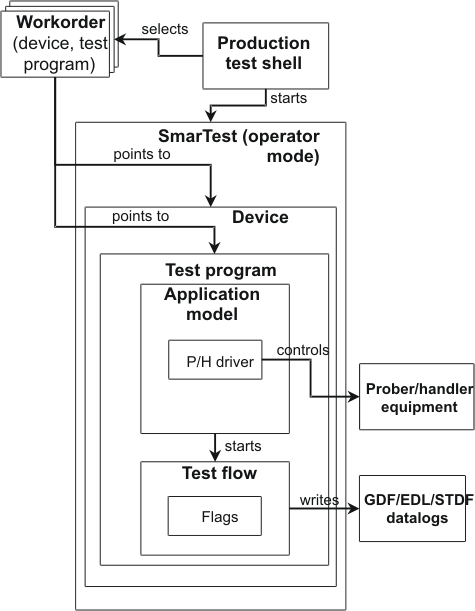

Custom shell in operator mode
This type of custom test shell only lets you select and execute workorders. The test shell prompts the operator to specify a workorder, starts SmarTest in operator mode using the command line option -O, and passes the workorder name as a command line parameter. SmarTest will take it from there, and the test shell simply waits for SmarTest to complete testing before it can run again on another lot. The figure below illustrates this process.

A disadvantage of this approach is that because the shell calls SmarTest in operator mode, and also specifies the workorder name in the call, all SmarTest processes terminate once a lot has completed. Thus, a reload of the setups, which could take several minutes, will be necessary for the next lot.